| 日付 | 2011年11月16日（水） |
|---|---|
| 山域 | 奥秩父 |
| メンバー | 家族（妻、長女・0歳） |
| 山行形態 | 子連れ日帰り |
| アクセス | 車 |
| ルート (Map) | 深田公園入口→女岩→茅ヶ岳→金ヶ岳往復→尾根コース→深田公園入口 |
茅ヶ岳は奥秩父前衛の古火山で下界からよく目立つ山だ。
その姿は中央線から望むと八ヶ岳と非常によく似ている。
そのため「にせ八つ」とも呼ばれている。
また、この山は深田久弥氏が登山中に亡くなった山として有名だ。
前々から気にはなっていたのだが、交通の便が悪くて今まで登れずにいた。
車を手に入れたので、快晴の登山日和に登ってみることにする。
8:26 深田公園入口駐車場到着。標高940m。
空には月がぽっかりと浮かんでいる。
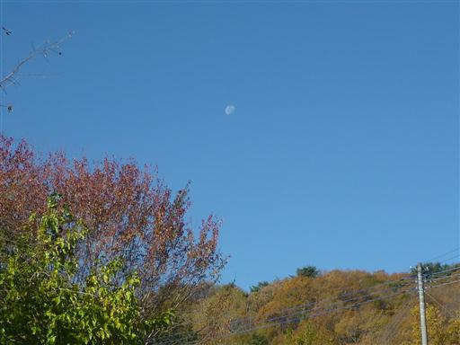
緩やかな傾斜の広い道を歩いていく。
火山の裾野のため、最初はゆっくりと標高を上げていく。

今日は絶好の快晴。黄葉が美しい。
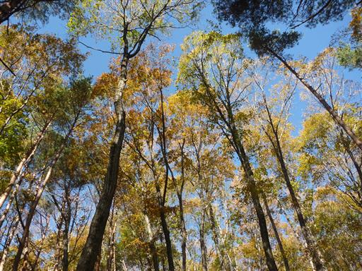
紫色の実がなっている。何の実だろうか？

沢沿いの道を登っていくと、女岩に到着する。岩というより岩壁という感じだ。
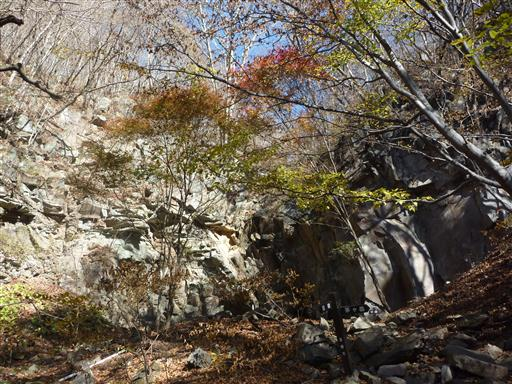
崩れ落ちた岩の奥から水が噴き出している。
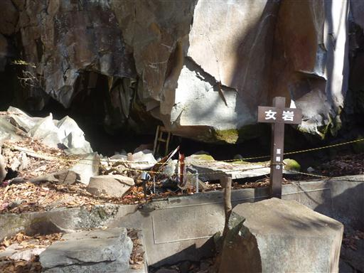
岩壁から水が染み出しているのはよく見かけるが、これほど激しく水が出ている光景は初めて見た。
この山唯一の貴重な水場だ。
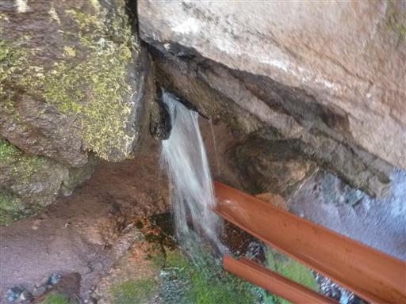
女岩からは沢を外れて急な斜面を登っていく。
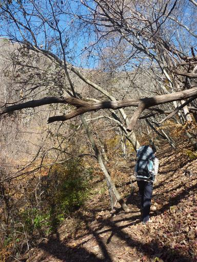
この辺りの紅葉はもう終わっている。地面には無数の落ち葉が積もっている。

尾根を目指して広い斜面をジグザグに登っていく。
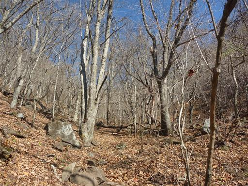
深田久弥終焉の地に到着。登っている最中に突然倒れたらしい。
背後に見えているのは金峰山で、なかなかの好展望ロケーションだ。
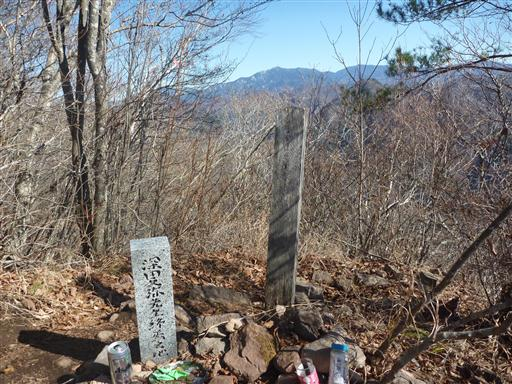
尾根道はところどころで展望が広がり、背後には富士山が大きく見える。
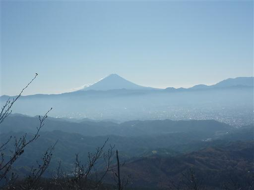
10:24 茅ヶ岳山頂到着。標高1704m。
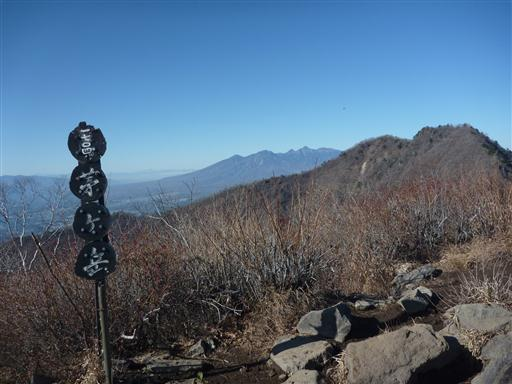
絶好の好展望台であるこの山からは360度遮るもののない展望が開ける。
南西方向に見えるのは巨大な南アルプス。鳳凰三山や甲斐駒ヶ岳が見えている。
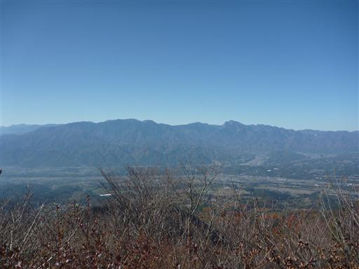
目を北に転じると、金峰山を中心に奥秩父の山々が広がっている。
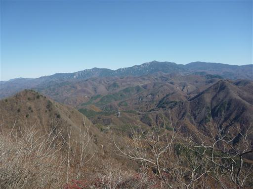
金ヶ岳の背後には美しい裾を引いた八ヶ岳が大きい。
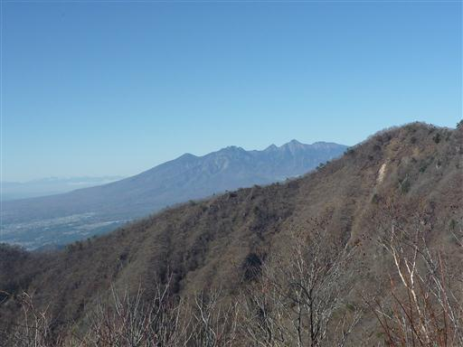
その背後、はるか遠くに北アルプスの姿まで望める。
南アルプスと違い、北アルプスは雪が積もってもう真白だ。
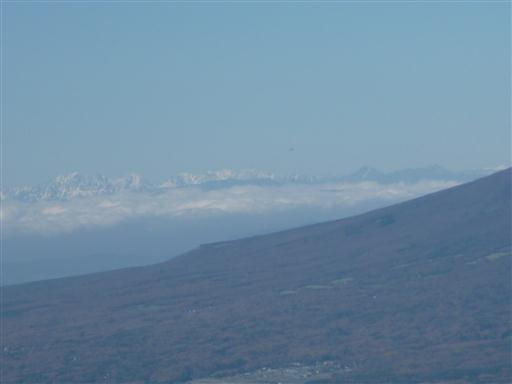
山頂には茅ヶ岳を中心とした立体の地図が置かれている。
山の名前はどこにも記載されていないため、山座同定には使いにくい。
富士山と茅ヶ岳は皆が触るためか、山頂部が削れている。
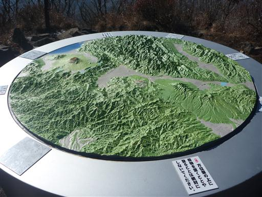
朝晩は相当冷えるのか、足元には霜柱ができている。
日が当たっている場所は霜柱が解けてべちゃべちゃになっている。
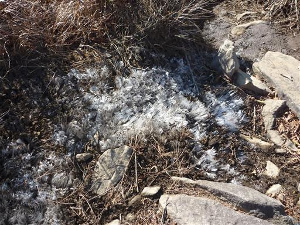
ここから金ヶ岳を往復する。
鞍部から見上げると、金ヶ岳は急斜面の鋭い山容でなかなか格好良い。
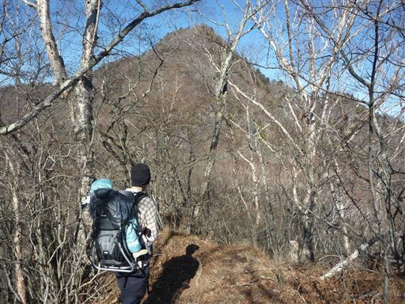
石門を通過する。まるで妙義山みたいだ。
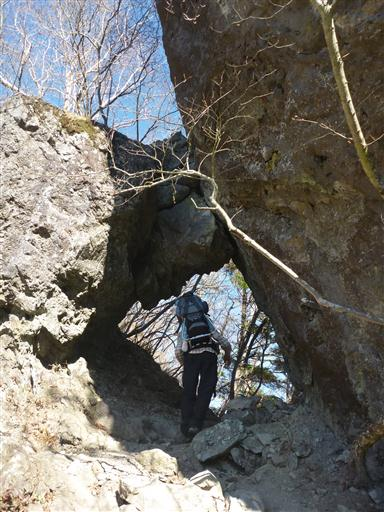
急傾斜の尾根道を登っていく。
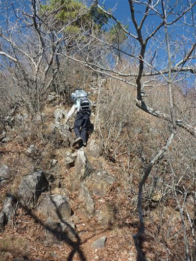
岩場が点在しているため、所々で展望が広がる。
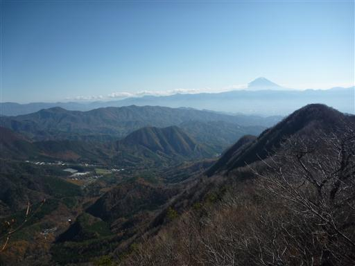
頭上を見上げると、ここには赤い実がなっている。
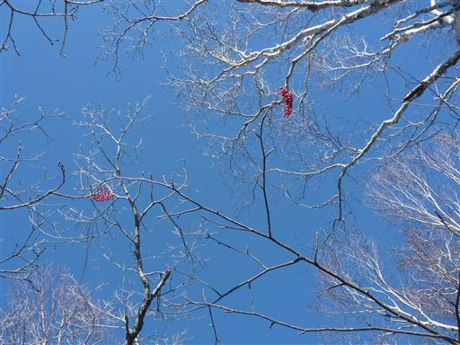
11:24 金ヶ岳山頂到着。標高1764m。
こちらの山の方が茅ヶ岳より60m高いが、樹木に囲まれているため展望は茅ヶ岳に劣る。
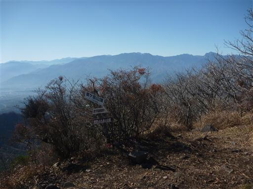
ここで腰をおろして休憩。昼食をとることにする。
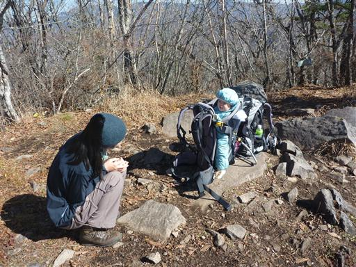
茅ヶ岳に戻った後、下山は尾根コースを歩くことにする。
付近はカラマツ林が広がっている。
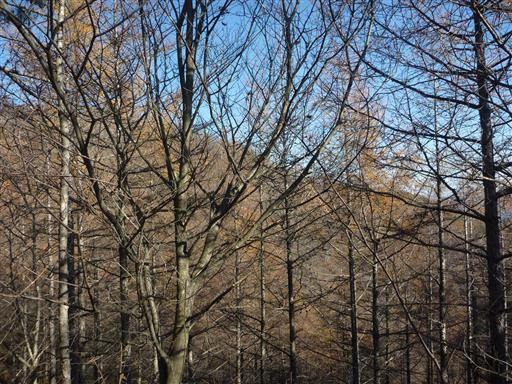
木の枝にマリモのような緑の球がくっついている。ヤドリギだろうか？
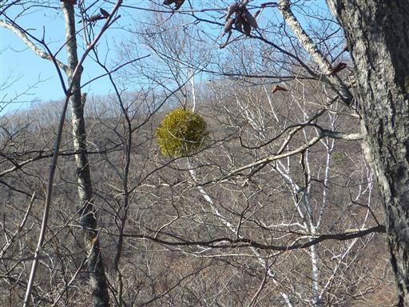
この尾根は防火帯になっていて、木は広く切られている。
木のなくなったところにはススキが生えている。

下山して車道に到着する。少し歩くと、登りの時に使った道と合流する。
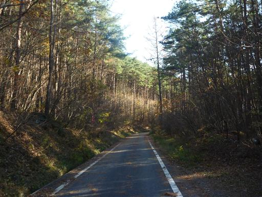
緩やかな傾斜のある道を下っていく。
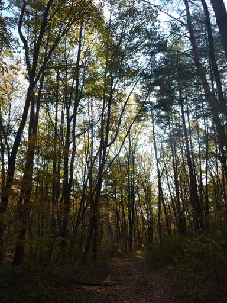
深田記念公園に寄ってから帰ることにする。
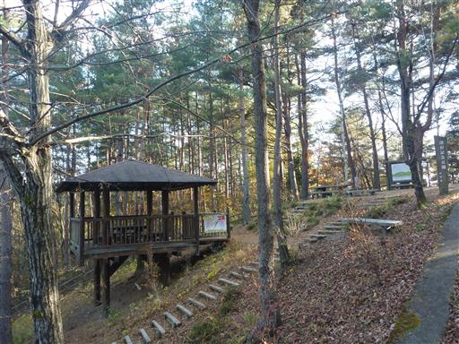
「百の頂に百の喜びあり」の碑。
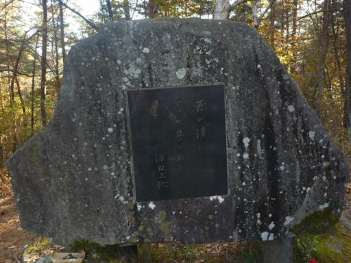
駐車場脇でぶどうジャムが売られている。1つ購入する。
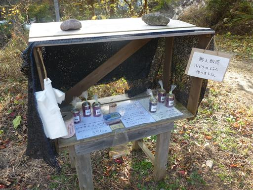
14:51 深田公園入口駐車場到着。
四囲に名峰が広がる素晴らしい展望の山だった。
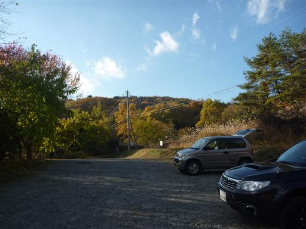